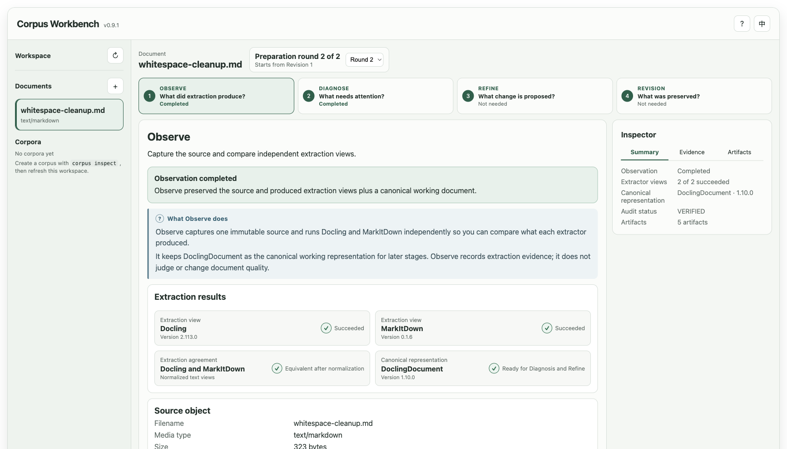

Extraction changes representation
Compare independent views and keep the original source identity attached.
Learning-first document preparation
Understand the path from a raw source to an inspectable prepared revision. Read the principles, then follow the same lifecycle in a local workbench.
Why preparation comes first
Extraction creates a useful representation, but it can also expose layout noise, structural traps, and ambiguous text. Preparation makes those conditions visible before downstream systems inherit them.
Compare independent views and keep the original source identity attached.
Record concrete findings and affected document items before proposing a change.
Keep diagnosis separate from the human decision to approve or reject a refinement.
What makes this workbench different
The project exposes sources, extraction views, findings, decisions, revisions, and corpus reports instead of hiding them behind one result.
The guides, Workbench, and CLI teach the same project-owned lifecycle rather than separate demo paths.
Diagnosis can identify a condition, but only a recorded approve or reject decision resolves a proposal.
Each approved change creates a new prepared revision and preserves the evidence behind it.
One inspectable lifecycle
Three learning interfaces
Each interface serves a different learning need while using the same document lifecycle.
Learn why each preparation step exists and what evidence it produces.
Explore guided documents through Observe, Diagnose, Refine, and Revision.
Run the complete lifecycle and verify the records yourself.
Real preparation evidence
The guided whitespace example connects one diagnosis rule, one supported refiner, one explicit decision, and one immutable revision.
The finding identifies the exact affected content. R001 proposes only the supported mechanical change.
Quarterly report→Quarterly reportThe local Workbench
Start from a guided fixture or a supported local document. Inspect extraction, run diagnosis, review one supported proposal, record a decision, and follow the prepared revision without editing JSON.

Observe, Diagnose, Refine, and Revision each answer one learner question.
Summary, Evidence, and Artifacts stay scoped to the current stage and round.
Before-and-after comparisons make approve and reject choices concrete.
Trust and control
The project treats evidence and authority as different things. That distinction stays visible in the records and the interfaces.
Original sources, extraction artifacts, findings, proposals, decisions, transformations, hashes, and revisions remain available for inspection.
Diagnosis identifies a condition. A supported proposal changes the document only after an explicit human decision.
Inspectable outputs
The workbench does not hide the preparation path behind one final document. Each stage leaves a focused record that can be read and verified.
A direct CLI
The CLI is the complete, compact interface for learners who want to repeat a lifecycle, inspect raw output, or verify published records directly.
A deliberate boundary
Chunking, embeddings, indexing, retrieval, generation, and RAG evaluation remain downstream. This project stays focused on making document preparation understandable and inspectable.